Workshop di carta e scrittura a Torino e dintorni
Workshop e corsi di origami, collage, journaling, scrittura creativa, calligrafia, lettering e poesia, e book club, a Torino, Cuneo e dintorni.
Cerca tutti i workshop54 attività in programma · aggiornato il 23 novembre 2026
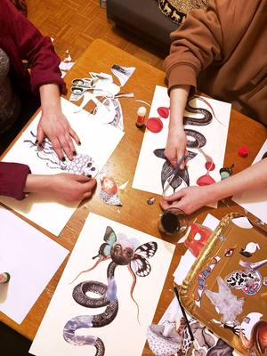
sab14novCarta e scritturaMondi possibili: collage e pennarelli acrilicida sabato 14 novembre a sabato 19 dicembre, 16:30–18:30Aurora (TO) · Offerta liberacon Gabriella Saiello per Cecchi Point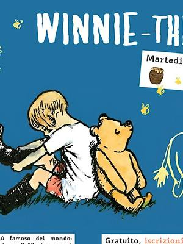
mar24novPer famiglieWinnie-the-Pooh: letture e giochimartedì 24 novembre, 17:00–18:00Cuneo (CN) · Gratiscon Biblioteca 0-18 di Cuneo con Noau Officina Culturale mar24novCarta e scritturaSarò breve: gruppo di lettura di libri brevimartedì 24 novembre, 19:00Quadrilatero (TO)con Cristina Terenzio per Le Altalene
mar24novCarta e scritturaSarò breve: gruppo di lettura di libri brevimartedì 24 novembre, 19:00Quadrilatero (TO)con Cristina Terenzio per Le Altalene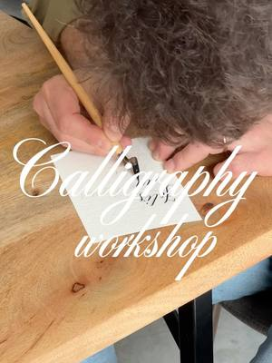
dal10novCarta e scritturaCorso di calligrafia: tre serate col penninoda martedì 10 novembre a martedì 24 novembre, ogni martedì, 19:00–20:30Aurora (TO) · 25 € a lezionecon Noemi Venturino per Velvet Truffle Riot- mar24novCarta e scritturaGruppo di lettura: «Otto ragazze»martedì 24 novembre, 19:30–20:30Settimo Torinese (TO) · Gratiscon Mondadori Bookstore Settimo Torinese
 mer25novCarta e scritturaStreet collage: workshop con Alice Arduinomercoledì 25 novembre, 17:00–20:00San Donato (TO) · Gratiscon Alice Arduino per Più SpazioQuattro
mer25novCarta e scritturaStreet collage: workshop con Alice Arduinomercoledì 25 novembre, 17:00–20:00San Donato (TO) · Gratiscon Alice Arduino per Più SpazioQuattro mer25novAltroAppo: incontro di poesiamercoledì 25 novembre, 18:00Vanchiglia (TO) · Gratiscon Approdo Poetico Torino per Spazio Costanza
mer25novAltroAppo: incontro di poesiamercoledì 25 novembre, 18:00Vanchiglia (TO) · Gratiscon Approdo Poetico Torino per Spazio Costanza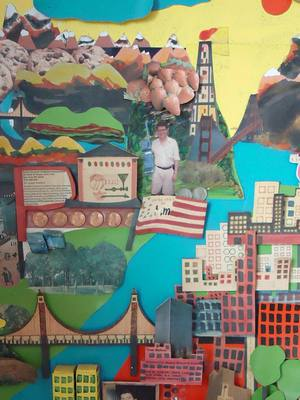
mer25novCarta e scritturaVini, vinili e vinavil: collage e ascoltomercoledì 25 novembre, 18:30Aurora (TO) · Gratiscon Alice Mammola e Vanna Barboni per Jigeenyi- dal26novCarta e scritturaCiclozine: fanzine contro la nauseada giovedì 26 novembre a giovedì 24 giugno, 18:30–20:30San Salvario (TO) · Gratiscon Antro
- gio26novCarta e scritturaSpeed Date Letterario: incontri tra librigiovedì 26 novembre, 18:30Trofarello (TO) · Gratiscon Pagina37
- gio26novCarta e scritturaImpro Poetry Slam: gara di versi improvvisatigiovedì 26 novembre, 20:00San Donato (TO)con Pppoppoetry per Più SpazioQuattro
 ven27novGioielliRitagli Preziosi: una spilla dal collagevenerdì 27 novembre, 18:00–20:00Torinocon Punto fatto a mano
ven27novGioielliRitagli Preziosi: una spilla dal collagevenerdì 27 novembre, 18:00–20:00Torinocon Punto fatto a mano dal16ottCarta e scritturaScrittura creativa: leggere e raccontareda venerdì 16 ottobre a venerdì 28 maggio, ogni venerdì, 18:30–20:00Barriera di Milano (TO) · Gratiscon Cascina Macondo per Bagni Pubblici
dal16ottCarta e scritturaScrittura creativa: leggere e raccontareda venerdì 16 ottobre a venerdì 28 maggio, ogni venerdì, 18:30–20:00Barriera di Milano (TO) · Gratiscon Cascina Macondo per Bagni Pubblici- sab28novCarta e scritturaLa magia della calligrafia: auguri a brushsabato 28 novembre, 10:00–11:30Barriera di Milano (TO) · 25 €con Cristina Pi per The Flairy Market
 sab28novCarta e scritturaLa cartolina delle belle parole: collagesabato 28 novembre, 10:00–12:00Torinocon Soraia Aguirre per Spazio IAIA
sab28novCarta e scritturaLa cartolina delle belle parole: collagesabato 28 novembre, 10:00–12:00Torinocon Soraia Aguirre per Spazio IAIA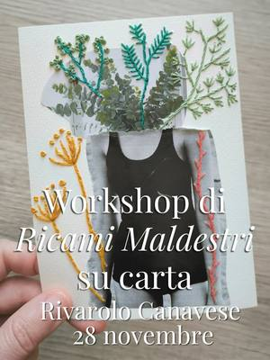
sab28novTessileRicami Maldestri: ricamo su cartasabato 28 novembre, 14:30–17:30Rivarolo Canavese (TO) · 50 €con Un peu sauvage per Uncipazzo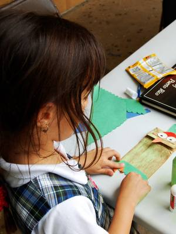
sab28novPer famiglieLetterina dei desideri: laboratorio per bambinisabato 28 novembre, 15:00–17:00Barriera di Milano (TO)con My Caro Lab per The Flairy Market- sab28novGioielliRitagli Preziosi: un ciondolo dal collagesabato 28 novembre, 15:00–17:00Torinocon Punto fatto a mano
- sab28novCarta e scritturaClub del libro: libri fotograficisabato 28 novembre, 16:30Fossano (CN)con Circolo Senza Margini per Ubik Fossano
 dom29novCarta e scritturaJournaling: stickers con fiori pressatidomenica 29 novembre, 09:00–12:30Borgo Po (TO)con Anema e Storie e La Cerca Regali per TObed
dom29novCarta e scritturaJournaling: stickers con fiori pressatidomenica 29 novembre, 09:00–12:30Borgo Po (TO)con Anema e Storie e La Cerca Regali per TObed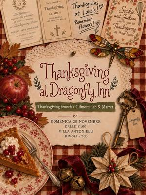
dom29novCarta e scritturaThanksgiving al Dragonfly Inn: addobbi di Nataledomenica 29 novembre, 11:00–15:00Rivoli (TO) · 45 €con Pancakes and Clouds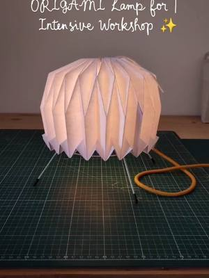
dom29novCarta e scritturaIntensivo di origami: lampada con telaiodomenica 29 novembre, 14:00–19:00San Salvario (TO) · 80 €con Origami Pop dom8novPer famiglieCarta, pieghe e meraviglia: libri pop-upda domenica 8 novembre a domenica 29 novembre, 16:30Quadrilatero (TO) · 5 €con MUSLI
dom8novPer famiglieCarta, pieghe e meraviglia: libri pop-upda domenica 8 novembre a domenica 29 novembre, 16:30Quadrilatero (TO) · 5 €con MUSLI- dom29novCarta e scritturaFuori dal margine: riscrivere i finalidomenica 29 novembre, 17:00–19:00Collegno (TO) · Gratiscon Consiglio di Classe del Cuore per Leumann Hub
 dal2dicCarta e scritturaCome si racconta una storia: scrittura creativada mercoledì 2 dicembre a mercoledì 27 gennaio, ogni mercoledì, 17:30–19:00Mirafiori (TO) · 50 € per 5 lezionicon Giulietta Vacis per Casa nel Parco
dal2dicCarta e scritturaCome si racconta una storia: scrittura creativada mercoledì 2 dicembre a mercoledì 27 gennaio, ogni mercoledì, 17:30–19:00Mirafiori (TO) · 50 € per 5 lezionicon Giulietta Vacis per Casa nel Parco- dal2dicCarta e scritturaBiblioterapia: leggere per conoscersida mercoledì 2 dicembre a mercoledì 9 giugno, 18:30–20:30San Salvario (TO) · Gratiscon Giulia Maria Calderoni per Antro
 sab5dicGioielliNatale Creativo: orecchini in origamida sabato 5 dicembre a domenica 6 dicembreTorinocon Petites Révolutions
sab5dicGioielliNatale Creativo: orecchini in origamida sabato 5 dicembre a domenica 6 dicembreTorinocon Petites Révolutions sab5dicPer famiglieStorie a colazione: kamishibai e colorisabato 5 dicembre, 10:00–11:00Rivoli (TO) · 20 €con Officine Castagnero
sab5dicPer famiglieStorie a colazione: kamishibai e colorisabato 5 dicembre, 10:00–11:00Rivoli (TO) · 20 €con Officine Castagnero sab5dicPitturaWorkshop di segnalibri: acquerello e zentanglesabato 5 dicembre, 15:30Borgomanero (NO) · 39 €con Creo Workshop
sab5dicPitturaWorkshop di segnalibri: acquerello e zentanglesabato 5 dicembre, 15:30Borgomanero (NO) · 39 €con Creo Workshop sab5dicPer famigliePenne Selvagge: un racconto di Natalesabato 5 dicembre, 16:00–17:30Centro (TO) · 10 €con Merende Selvagge per Circolo dei Lettori
sab5dicPer famigliePenne Selvagge: un racconto di Natalesabato 5 dicembre, 16:00–17:30Centro (TO) · 10 €con Merende Selvagge per Circolo dei Lettori sab5dicTessileRicami Maldestri: biglietti di Natale ricamatisabato 5 dicembre, 16:00–18:00Biella (BI) · 40 €con Un peu sauvage per Camerasud
sab5dicTessileRicami Maldestri: biglietti di Natale ricamatisabato 5 dicembre, 16:00–18:00Biella (BI) · 40 €con Un peu sauvage per Camerasud dom6dicPitturaPaint & Cream Tea: Victorian Puzzle Pursedomenica 6 dicembre, 16:00–19:00Torino · 40 €con Laura Raduazzo per Smith’s British
dom6dicPitturaPaint & Cream Tea: Victorian Puzzle Pursedomenica 6 dicembre, 16:00–19:00Torino · 40 €con Laura Raduazzo per Smith’s British- mer9dicCarta e scritturaMani: rilegatura giapponesemercoledì 9 dicembre, 17:00–19:00Vanchiglietta (TO)con Elmofiore per Bocciofila Vanchiglietta
- mer9dicCarta e scritturaParole ritagliate: collage poeticomercoledì 9 dicembre, 18:30–20:30San Salvario (TO) · Gratiscon Gianluca Montanino per Antro
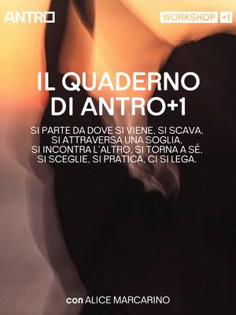
dal12dicCarta e scritturaIl quaderno di Antro+1: scrittura creativada sabato 12 dicembre a sabato 12 giugno, 10:30–12:30San Salvario (TO) · Gratiscon Alice Marcarino per Antro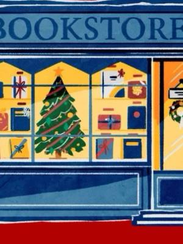
sab12dicCarta e scritturaBook Club 2.0: «Il nostro grande niente»sabato 12 dicembre, 18:30Vanchiglia (TO) · Gratiscon Book Club 2.0 per Libreria Fuori dal Tempo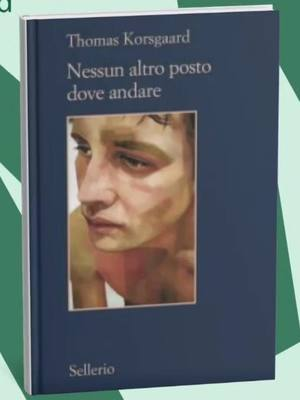
mer16dicCarta e scritturaMaureads: club del libro queermercoledì 16 dicembre, 18:30Centro (TO) · Gratiscon Maurice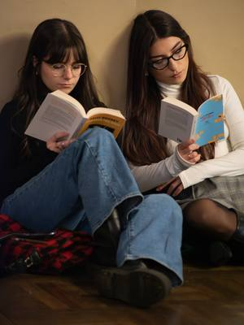
ven18dicCarta e scritturaA libro aperto: gialli di Natalevenerdì 18 dicembre, 18:00Centro (TO) · Gratiscon Alice Basso per Circolo dei Lettori- ven18dicCarta e scritturaRien ne va plus: caso e creativitàvenerdì 18 dicembre, 18:30–20:30San Salvario (TO) · Gratiscon Nica Costa per Antro
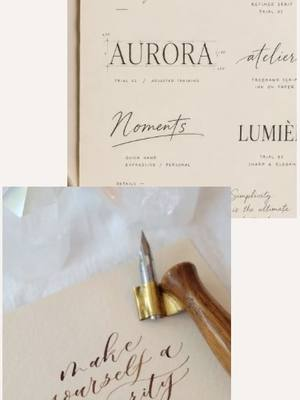
sab19dicCarta e scritturaLettering: scrivere bello per Natalesabato 19 dicembre, 09:30–12:00Cuneo (CN) · 35 €con Barbara Serafino per Atelier Crea-Arti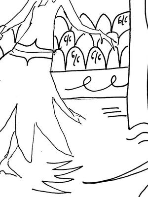
dom20dicCarta e scritturaL’ABC della poesia: versi e illustrazionidomenica 20 dicembre, 15:00–17:30Cenisia (TO) · 17 €con Serena Lou e Dodo datada definireAltroCascina Roccafranca: corsi della stagioneData da definireMirafiori (TO)con Cascina Roccafranca
datada definireAltroCascina Roccafranca: corsi della stagioneData da definireMirafiori (TO)con Cascina Roccafranca dataa sceltaCarta e scritturaCorso di lettering: calligrafia creativaData a sceltaTorino · 119 € per 6 lezionicon Kreative Club
dataa sceltaCarta e scritturaCorso di lettering: calligrafia creativaData a sceltaTorino · 119 € per 6 lezionicon Kreative Club datada definirePitturaNovel Academy: corsi di disegno e pitturaData da definireTorinocon Novel Academy
datada definirePitturaNovel Academy: corsi di disegno e pitturaData da definireTorinocon Novel Academy datada definireCarta e scritturaCorso di calligrafia: scritture storicheData da definireCentro (TO)con Enrico Graziano per Polo Le Rosine
datada definireCarta e scritturaCorso di calligrafia: scritture storicheData da definireCentro (TO)con Enrico Graziano per Polo Le Rosine datada definireTessileStrappi e intrecci: journaling e tessituraData da definireCentro (TO)con Marilù Lab per Polo Le Rosine
datada definireTessileStrappi e intrecci: journaling e tessituraData da definireCentro (TO)con Marilù Lab per Polo Le Rosine dataa sceltaCarta e scritturaMappaBar: regalo su misura con la mappaData a sceltaSan Paolo (TO)con Scrapsa Lab
dataa sceltaCarta e scritturaMappaBar: regalo su misura con la mappaData a sceltaSan Paolo (TO)con Scrapsa Lab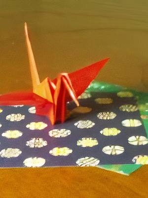
datada definireCarta e scritturaLaboratorio di origami: dalla carta all’oggettoData da definireSan Mauro Torinese (TO)con Golnaz Esmaeeli per upTOyou datada definireCarta e scritturaWorkshop di calligrafia: corsivo ingleseData da definire, 10:00–18:00Centro (TO)con Enrico Graziano per Polo Le Rosine
datada definireCarta e scritturaWorkshop di calligrafia: corsivo ingleseData da definire, 10:00–18:00Centro (TO)con Enrico Graziano per Polo Le Rosine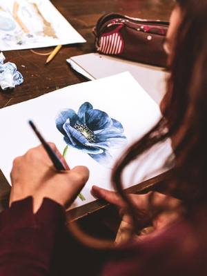
ognisabCarta e scritturaBenessere creativo: colazione e collageOgni sabato, 10:30–12:30Torino · 30 €con Kreative Club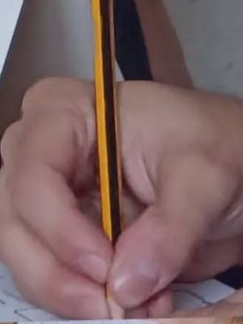
ognivenCarta e scritturaScrivere per passione: scrittura creativaOgni venerdì, 16:00–17:30Vallette (TO) · Offerta liberacon M. Storyteller Lab ognisabCarta e scritturaScriviamo in bella: lezione di calligrafiaOgni sabato, 16:30Quadrilatero (TO) · 5 €con MUSLI
ognisabCarta e scritturaScriviamo in bella: lezione di calligrafiaOgni sabato, 16:30Quadrilatero (TO) · 5 €con MUSLI- ognimerPer famiglieAmici di lettura: leggere insiemeOgni mercoledì, 17:00–18:00Aurora (TO)con Amici di lettura per Cecchi Point
 ognigioCarta e scritturaLaboratorio di scrittura: il quotidianoOgni giovedì, 18:00–20:00Barriera di Milano (TO) · 100 € per 8 incontricon Bunker
ognigioCarta e scritturaLaboratorio di scrittura: il quotidianoOgni giovedì, 18:00–20:00Barriera di Milano (TO) · 100 € per 8 incontricon Bunker